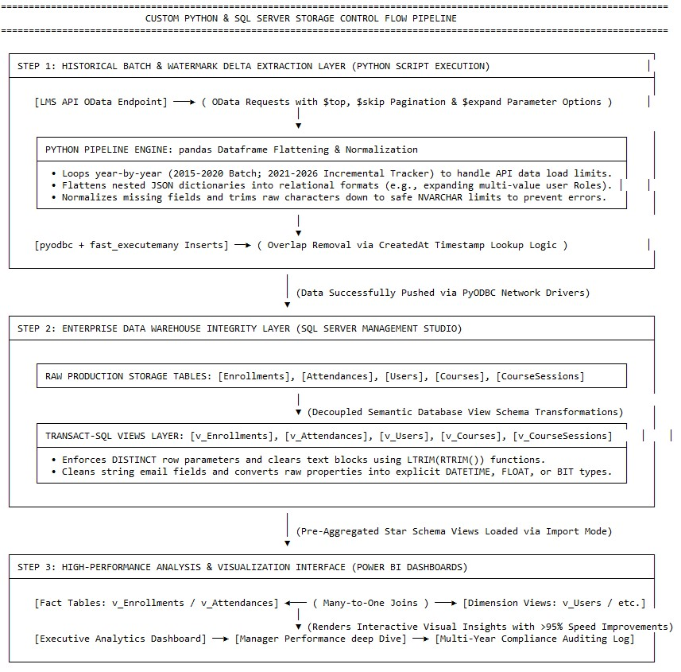

API-Siloed & Semi-Structured Data
LMS information was accessible only through OData feeds containing complex nested JSON arrays that could not be used directly for business reporting.
Developed a fully automated, cost-efficient enterprise LMS data platform using Python, SQL Server, optimized SQL views, Windows batch scripts, Task Scheduler, and Power BI—without relying on licensed cloud orchestration or enterprise ETL platforms.
The organization needed scalable, multi-year LMS reporting but lacked both a centralized warehouse and access to traditional enterprise ETL platforms.
LMS information was accessible only through OData feeds containing complex nested JSON arrays that could not be used directly for business reporting.
Separate Power BI files were limited to two calendar years each, making consolidated 2015–2026 trend analysis impossible.
Organizational limits prevented use of SSIS, Azure Data Factory, Microsoft Fabric, or other standard orchestration platforms.
Direct connections to unmodelled source data caused slow report loading, screen lag, and frequent Power BI crashes.
A custom on-premises data warehouse and automated ETL framework was engineered using Python, SQL Server, SQL views, Windows batch scripts, Task Scheduler, and Power BI.
Used requests, pandas, pyodbc, and urllib3 to authenticate, extract, transform, and load enterprise LMS data.
Implemented $top, $skip, and $expand logic to retrieve large datasets, course ratings, and attendance sub-records safely.
Flattened multi-layered roles and transactional arrays into clean relational rows while preserving empty attributes.
Used pyodbc fast_executemany and year-by-year historical batches to process 2015–2026 data reliably.
Used the latest CreatedAt value, deleted overlapping records, and reloaded the current 30-day delta to avoid duplicate keys and missing changes.
Standardized strings, e-mail values, DATETIME fields, BIT fields, and reporting logic before Power BI consumption.
Connected Import-mode fact views for Enrollments and Attendances to conformed Users, Courses, and Course Sessions dimensions.
Created executable batch scripts and scheduled the complete Python ETL workflow through Windows Task Scheduler.
DirectQuery reporting was replaced with a centralized SQL Server warehouse and optimized semantic layer.
Python-based extraction, transformation, batch processing, and scheduling automated routine data preparation.
Incremental loading eliminated repeated processing of the complete historical dataset.
Data from 2015–2026 replaced multiple year-specific reports with one enterprise reporting platform.
A governed SQL Server warehouse improved reporting accuracy and consistency across enterprise LMS analytics.
Overlap-window incremental loading and automated validation protected data completeness and business-key integrity.
Python, SQL Server, Windows Task Scheduler, and batch automation delivered enterprise-grade ETL without dedicated platform licensing.
The reusable framework can support new data sources and increasing reporting demand without major architectural redesign.
A local, low-cost architecture using core technologies and existing infrastructure instead of licensed cloud orchestration.

The documented control flow extracts paginated OData data, flattens nested JSON, loads SQL Server production tables, applies semantic SQL views, and supplies a Power BI star schema through automated batch scheduling.
Replace this placeholder with the public Power BI embed URL after publishing the report.
Replace this generic YouTube URL after publishing the walkthrough.
The repository contains Python ETL scripts, SQL warehouse design, semantic views, Windows automation, architecture details, and project documentation.
Discover more enterprise data transformation and analytics projects.